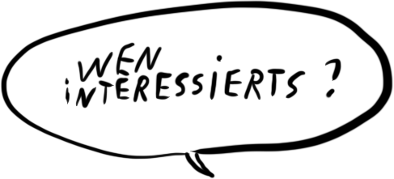
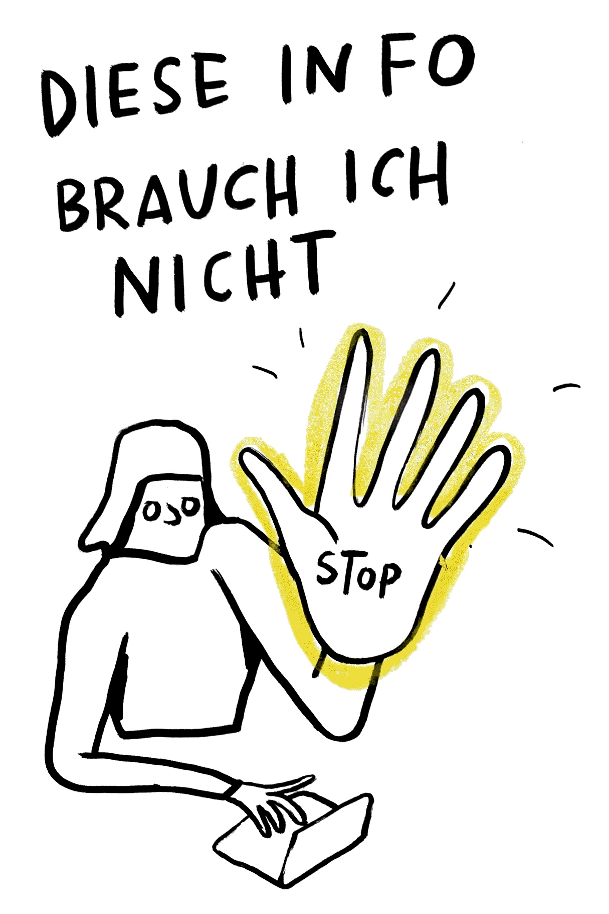

Tipp 1: Stopp!

Um den ersten Tipp vorzustellen, schlagen wir dir ein weiteres Gedankenexperiment vor:
Stell dir vor, du kommst gerade von der Arbeit nach Hause. Dein Smartphone vibriert: Ein Bekannter hat dir einen Link zu einer Website der Universität Gießen geschickt - mit dem Kommentar: "Deutsche Internetsicherheit - LOL 😆!" Der Teaser des Artikels lautet: "Universität Gießen aus Sicherheitsgründen offline. Wegen Verdachts auf Cyber-Angriff wird Strafanzeige gestellt."
Was wirst du tun?
Vielleicht handelt es sich hierbei um ein Thema, das dich gerade beschäftigt und somit relevant für dich ist. Zum Beispiel, weil du als Mitarbeiterin an der Universität Gießen beschäftigt bist. Dein Bekannter weiß das und will dir deshalb diese Information zukommen lassen. Sehr viel häufiger - und damit wahrscheinlicher - ist aber ein anderer Fall: Dein Bekannter hat etwas im Internet gelesen, das ihn überrascht oder wütend gemacht hat oder das er einfach lustig fand - nun möchte er seine Emotionen mit dir teilen. Deshalb schickt er dir den Link zu diesem Artikel.
In diesem Fall hilft dir der erste der vier Tipps: Stopp!

Konkret bedeutet das: Bevor du - aus Gewohnheit oder Neugierde - auf den Link klickst und zu lesen beginnst, solltest Du dir die Frage stellen: Möchte ich wirklich diese Website öffnen? Will ich den Artikel lesen? Hat das Thema für mich Relevanz? Will ich mich weiter damit auseinandersetzen?
Wenn Du auf diese Fragen nicht mit einem sehr überzeugten ‘Ja’ antwortest, dann leg dein Smartphone schnell wieder beiseite oder investiere deine Bildschirmzeit lieber in etwas, das du selbst auswählst und das dich tatsächlich interessiert.
Dieser 'Stopp-Tipp' ist übrigens auch dann hilfreich, wenn du schon mitten in den Tiefen des Internets unterwegs bist. Zum Beispiel, weil du vom Link deines Bekannten ausgehend, angefangen hast, nach weiteren Cyber-Angriffen auf Universitäten zu googeln - und bevor du dich versiehst, klickst du dich von Artikel zu Artikel. Hier gilt: Besser ein spätes 'Stopp', als gar keins.
Was aber, wenn die Information für dich relevant ist? Dann lohnt es sich, einen Blick auf die anderen Tipps zu werfen. Der zweite Tipp lautet: Quelle überprüfen!